FOOD WASTE AND ITS REDUCTION
Learn about the causes, impacts, and solution to minimize food waste and create a more sustainable
future.
CAUSES OF FOOD WASTE
1. Lack of Appropriate Planning
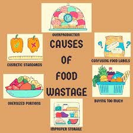
One of the top contributors to food wastage is because of a lack of appropriate planning on the consumer’s
part.
Sometimes people buy lots of food without appropriately planning when and how the food will be prepared for
consumption.
Coupled with the contemporary schedules of work and appointments, people, therefore, tend to change food
preparation plans or fail to remember to use them on time.
At times most people are not in control, leading to the expiry of the foods, after which they are wasted.
But that’s not the only way improper planning contributes to food wastage. You see, again, due to a lack of
appropriate planning, people have poorly prepared food that doesn’t taste great. It all ends up as
waste.2. Purchase and Preparation of Excess Food
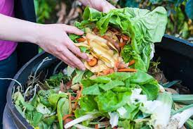
Most of the time, food is wasted by purchasing, preparing, or serving more than we need. When this happens,
the excess food on the plate or cooking pot goes to waste.Alternatively, the partially used food is
sometimes put at the back of the fridge and never reused. The same applies to excess purchases that pass
their expiration dates and therefore look, taste, and smell terrible. At the end of it all, all the excess
ends up as waste food.3. Managerial, Financial, and Technical Constraints
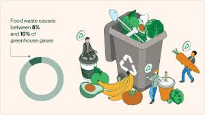
This is mainly a challenge contributing to food wastage in developing countries.
The wastage occurs due to the constraints of improper management, inadequate finances, and technical
difficulties in harvesting methods, storage, and cooling problems.
This is due to adverse weather conditions, processing, packaging, infrastructure, and marketing systems.4. Over-preparation of Food in Restaurants, Hotels, and the Foodservice Industry
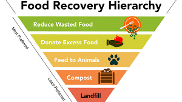
Most restaurants, hotels, and the food service industry alike have a tendency to over-preparing/producing
food.While the intention is good, especially in anticipation of high customer volume and the ability to not
run out of the menu, over-preparation often leads to the wastage of all the unsold food.
ince the food service operations cannot quantify the amount of food consumed on average, the kitchens keep
producing amounts thought to be enough but most of it is unnecessary.
DC Central Kitchen, committed to reducing food wastage, points out that overproduction in the food service
industry is the leading cause of food wastage.Besides, some managers believe producing food in large batches
minimizes costs, but in actual fact, it results in more waste than cook-to-order preparation or cooking in
small batches.5. Consumer Behavior
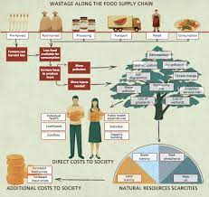 Customers have different preferences, which highly influence purchasing behavior on food items.Notably, the consumer behavior on focus here is the tendency of having a keen insight for good judgment, resulting in those who only prefer fresh vegetables and fruits and the restrictive must-display for shelf-life dates. Such consumer behavior, more often than not, contributes to the wastage of food as most of the food items may remain on the shelves till expiry. Also, such tendencies may force food service operators in restaurants and hotels to maintain extensive menu options and high-end services while assuring consistency, leading to food wastage.6. Over Merchandizing and Ordering in Food Stores and Supermarkets
Over-merchandizing food items and products in retail centers, wholesale markets, and supermarkets often
results in food loss.
Food service operations are habitually more focused on over-merchandizing in food stores and supermarkets by
using beautiful and attractive displays, thereby creating the idea of abundance in an attempt to promote
sales and customer satisfaction.
The overlooked aspect of over-merchandizing is the reason for this increased food waste. When people buy
more than needed, the excess will often end up in the trash bin.
Over-ordering also leads to the expiry of food staff with a limited shelf life as some will remain unsold.
EFFECTS OF FOOD WASTE
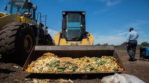
Food waste’s consequences are severe: It depletes natural resources, degrades the
environment, and constrains efforts to increase access to healthy diets for low-income populations,
including others.Some of the effects of food waste include the following;
1. Biodiversity Loss
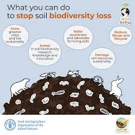
Food wastage impacts biodiversity loss at a global level. Farmers have increasingly invaded wild areas to
maximize agricultural yields in search of more fertile lands, leading to the extinction of different
species.
This is because practices such as slash and burn, deforestation, and conversion of wild areas into farmlands
have destroyed the natural habitats for birds, fish, mammals, and amphibians.Agricultural practices such as
mono-cropping have also compounded biodiversity loss.
The mass rearing of livestock for consumption and the use of pesticides in crop production has also
significantly contributed to;
Nitrogen, phosphorous, and chemical pollution in streams, rivers, and coastal waters, thus affecting marine
life.
2. Wastage of 1/3 of the World’s Fertile Land Regions
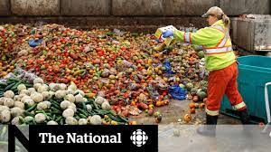
According to research, the produced but unconsumed food accounts for approximately 1.4 billion hectares,
constituting almost 1/3 of the planet’s agricultural land.
By looking at this from a well thought analytical angle, the world is wasting 30 percent of the world’s
fertile land, which could be used for other meaningful purposes such as environmental research.
3. Blue Water Footprint
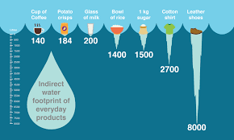
The volume of water used in agricultural food production is immense. Therefore, if 30 percent of all the
food produced goes to waste, then it means that more than 30 percent of freshwater used in the production
and processing of food also goes to waste.This contributes to the blue water footprint, which refers to the
amount of consumed surface and groundwater resources that go to waste.
Precise estimations indicate that food wastage is responsible for the wastage of nearly 250 cubic kilometers
(km3) of water. This wastage is equivalent to thrice the volume of Lake Geneva.
It is also affirmed that throwing out a kilogram of beef wastes 50,000 liters of water in meat production.
Similarly, 1000 liters of water is wasted if one glass of milk is poured down the drain
4. Increased Carbon Footprint and Acceleration of Climate Change
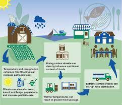
The food produced and later goes to waste is estimated to be equivalent to 3.3 billion tons of greenhouse
gas emissions, accelerating the impacts of climate change. Research also states that food waste is the third
biggest emitter of greenhouse gases.
The reason for this is the consideration for the energy wasted and the primary use of fossil fuels in food
production, including processing, cooking, and transportation to various consumer markets worldwide.
Moreover, the methane gas produced at landfills by food thrown out as waste further aggravates climate
change and global warming.
5. Economic consequences
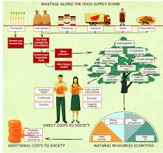
In addition to the environmental impacts, food wastage also results in direct economic costs. FAO’s report
estimates the economic losses associated with food wastage are about $750 billion dollars per annum.
Amazing Solutions to Food Waste
Reducing food loss and waste is essential in a world where millions of people go hungry daily. When we reduce waste, we respect the labor, effort, investment, and precious resources (like water, seeds, feed, etc.) that go into producing it, not to mention the resources that go into transporting and processing it. Here are some actions you can take to re-connect to food and what it stands for:Listed below are a few things that could help in reducing soil pollution.
1. Balancing Food Production With Demand
Foremost, precedence should be centered on balancing food production with the demand to reduce the problem
of food wastage. The first thing is to reduce using natural resources in food production.
Risk management tools can be applied in hotels, restaurants, and the food service industry, e.g., having a
risk management checklist and restaurant technology software that help run operations and monitor orders and
merchandising. This will ensure managers and chefs only produce and cook food according to demand or orders
made.Producing large batches of food has always resulted in food wastage. So in trying to save food, labor,
and money, the hotels and the entire food service industry should work on producing small batches or using
the cook-to-order option.- Input: Input are the different raw materials required for food production.
- Processing: The process of converting raw materials into finished edible products.
- Output: Output is the final product which is used for consumption of human beings.
2. Improving Food Harvesting, Storage, Processing, and Distribution Processes
The second strategy should be placed on developing efficient technologies and production systems that better
storage, harvesting, processing, and distribution processes.Redistribution can be the initial strategy for supplying or distributing more food to where there is a need and reducing supply where food is in surplus.
Governments and NGOs should also improve harvesting, storage, and processing by availing subsidies and training on better production practices, especially in developing countries.
3. Food Waste Reduction Initiatives
Supermarkets, retail food outlets, big restaurants, and individual consumers alike can also work on their
own tailored and creative efforts to reduce their food footprint.For instance, individual consumers can reduce their food footprint by not necessarily placing a high preference for the very best food quality.
Sometimes even blemished food items are still edible or can be purchased and used to make dishes like soups. Over-merchandizing can also be evaded to minimize food wastage.
4. Consumers to Buy and Prepare Food With a Plan
Using meal plans to prepare food can go a long way in ending food disposal. Consumers should only buy food
according to their plans or in small batches to reduce the food that goes to waste due to expiration after
long storage periods.5. Food Recycling
Food recycling efforts are underway, but the technologies and methods should be improved.tarch-rich foodstuffs such as crisps, bread, biscuits, and breakfast cereals can be recycled into high-quality feeds for livestock. Recycling food packaging materials can equally reduce the over-exploitation of virgin material. If it’s completely unfit for consumption, it can still be converted for other uses instead of being taken to landfills to emit methane gas.